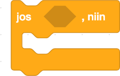
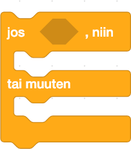

Ohjelmoinnissa ehtolauseet mahdollistavat ohjelman toimimisen halutulla tavalla silloin, kun ehdot täyttyvät. Ehdot joko täyttyvät (true) tai eivät täyty (false). Jos ehto täyttyy, jotain tapahtuu. Ehtolauseilla voi siis haaroittaa ohjelman suoritusta. Ehtolauseita voi myös laittaa toistensa sisään ja näin tehdä monimutkaisempia haaroituksia. Scratchissä on monia erilaisia mahdollisuuksia luoda ehtolauseita. Palikat, jotka alkavat sanalla "jos" tai niissä on sana "kunnes", ovat ehtolauseita.
Tämä Ohjaus-palikoiden palikka ajaa sisällään olevat palikat, jos ehto täyttyy.
Tämä Ohjaus-palikoiden palikka ajaa sisällään olevat palikat, jos ehto täyttyy; jos ei, ajaa se "tai muuten" sisällä olevat palikat.
